ВЕДОМСТВЕННЫЕ СТРОИТЕЛЬНЫЕ НОРМЫ
ИНСТРУКЦИЯ
ПО УСИЛЕНИЮ ФУНДАМЕНТОВ
АВАРИЙНЫХ И РЕКОНСТРУИРУЕМЫХ ЗДАНИЙ
МНОГОСЕКЦИОННЫМИ СВАЯМИ
ВСН 16-84
МИНПРОМСТРОЙ СССР
МИНИСТЕРСТВО ПРОМЫШЛЕННОГО СТРОИТЕЛЬСТВА СССР
|
РАЗРАБОТАНЫ |
Научно-исследовательским институтом промышленного строительства Министерства промышленного строительства СССР. |
|
ИСПОЛНИТЕЛИ: |
кандидаты техн. наук Э.И. Мулюков (руководитель темы), Г.С. Колесник, инж. С.Н. Назаров. |
|
ВНЕСЕНЫ |
Научно-исследовательским институтом промышленного строительства. |
|
УТВЕРЖДЕНЫ |
заместителем Министра промышленного строительства СССР А.Н. Панковым. |
|
СОГЛАСОВАНО |
с Главным техническим управлением Министерства промышленного строительства СССР. |
«Инструкция по усилению фундаментов реконструируемых и аварийных зданий многосекционными сваями» (ВСН 16-84) разработана НИИпромстроем по результатам практического опыта усиления фундаментов, выполненного Главбашстроем по техническим решениям, подготовленным НИИпромстроем в содружестве с Башкиргравданпроектом и ЗапУралТИСИЗом, а также с учетом зарубежного опыта.
В Инструкции учтены пожелания и замечания научно-исследовательских учебных и проектных институтов, а также производственных организаций (ВНИИГС, ДальНИИС, НИИОСП; Казанский, Ленинградский и Одесский инженерно-строительные институты, Новосибирский институт инженеров железнодорожного транспорта, Украинский институт инженеров водного хозяйства, Новочеркасский и Уральский политехнические институты; Башкиргражданпроект, ГПИ Куйбышевский цромстройпроект, ГПИ Фундаментпроект, Красноярский Промстройпроект, Пермпромпроект, ПИ-3, Ростовский ПромстройНИИпроект, Управление Моспроект-1, Уральский ПромстройНИИпроект, Уфимский филиал Тюменского Промстройпроекта; Главбашстрой, ЗапУралТИСИЗ).
Инструкция подготовлена канд. техн. наук Э.И. Булгаковым с участием кандидатов техн. наук Г.С. Колесника и А.Д. Назарова, инж. И.В. Баранова, С.Н. Назарова, Ш.Р. Незамутдинова.
Общее редактирование инструкции выполнил канд. техн. наук Э.И. Мулюков.
Все замечания, предложения и пожелания, направленные на дальнейшее совершенствование метода и улучшение содержания настоящей Инструкции будут нами внимательно рассмотрены и учтены при подготовке новой редакции.
|
Министерство промышленного строительства СССР (Минпромстрой СССР) |
Ведомственные строительные нормы |
ВСН 16-84 |
|
Инструкция по усилению фундаментов реконструируемых и аварийных зданий многосекционными сваями |
вводятся впервые |
1.1. Настоящая Инструкция распространяется на проектирование ж производство работ по усилению фундаментов промышленных, гражданских и сельскохозяйственных зданий и сооружений с помощью многосекционных свай. Усилению подлежат фундаменты каменных, бетонных и стальных зданий и сооружений, не претерпевших физический износ более 60 % и находящихся в состоянии реконструкции или аварии.
Примечания: 1. Инструкция распространяется на устройство фундаментов стен, опор, оборудования в стесненных условиях реконструируемых зданий и сооружений, где использование соответствующих строительных механизмов затруднено.
2. Инструкция может быть использована при разработке документаций для устранения крена зданий и сооружений.
1.2. Необходимость усиления фундаментов зданий устанавливается компетентной комиссией и может быть вызвана следующими факторами:
реконструкцией, сопровождающейся ростом постоянных и временных нагрузок на фундаменты за счет существенного изменения паспортной характеристики здания (этажности, типа перекрытия, балок, колонн и т.д.), изменением назначения помещений и увеличением длительных ж кратковременных нагрузок;
реконструкцией, связанной с освоением подземного пространства и с переоборудованием подземного хозяйства, нарушающей нормальную работу грунтового основания и угрожающей надежности существующего фундамента, а также реконструкцией непригодного фундамента;
|
Внесена Научно-исследовательским институтом промышленного строительства (ВИИпромстрой) |
Утверждена Министерством промышленного строительства СССР от 30 марта 1984 г., № 16-84 |
Срок введения в действие 1 июня 1984 г. |
аварийными осадками и кренами, вызванными ошибками и упущениями на стадиях изысканий, проектирования и строительства, в результате которых грунты не обладают несущей способностью» достаточной для восприятия расчетных нагрузок;
сверхнормативными осадками и кренами, возникающими в результате нарушений режима эксплуатации зданий и сооружений (проливы, утечки и иссушение грунтов горячими газами подземных негерметичных воздуховодов);
аварийными осадками и кренами, появляющимися в результате общего подтопления территории, нарушения поверхностного стока и режима грунтовых вод, а также в результате активизации антропогенного суффозионно-карстового процесса;
застройкой территории без учета возможного отрицательного воздействия на работу оснований и фундаментов эксплуатируемых зданий и сооружений;
осадками и кренами, появляющимися в результате воздействия особых нагрузок (резкие нарушения технологического процесса, взрывы, землетрясения, наводнения).
1.3. Использование многосекционных свай для устройства новых фундаментов в стесненных условиях реконструируемых зданий целесообразно при решении следующих задач:
возведение несущих (тяжелых) стен и колонн внутри помещений, когда разработка котлованов невозможна по техническим причинам;
монтаж оборудования с большими сосредоточенными нагрузками, требующими устройства фундаментов.
1.4. Многосекционной сваей называется составная (железобетонная) свая, вдавливаемая отдельными секциями длиной 0,6 - 1,2 м с помощью домкратов. По мере вдавливания секции свай стыкуются до такой общей длины, при которой обеспечивается предельное сопротивление сваи. Реактивное усилие домкрата воспринимается собственной массой усиливаемых зданий я сооружений.
1.5. Сущность усиления фундаментов зданий заключается в подведении под них многосекционных свай, на которые сразу после подведения передается частичная или полная нагрузка от существующего здания или сооружения. Дефицит несущей способности основания или свай из условия сопротивления по грунту, целесообразность использования многосекционных свай и техническое решение усиления существующего фундамента определяются проектной организацией.
1.6. Усиление существующих фундаментов многосекционными сваями, а также устройство новых фундаментов из многосекционных свай при возведении промежуточных стен и опор в стесненных условиях реконструируемых зданий выполняются в плановом порядке и заключаются в подготовке фундаментов для восприятия будущих повышенных постоянных и временных нагрузок.
При необходимости предварительно ремонтируется тело существующего ленточного или столбчатого фундамента, т.е. ликвидируются трещины, сколы для восстановления первоначальной проектной монолитности.
1.7. Особенность усиления фундаментов аварийных зданий заключается в прекращении опасных осадок и кренов, появившихся в результате исчерпания несущей способности оснований и повлекших развитие трещин по всему зданию или его части, не допускающих дальнейшую эксплуатацию по условиям техники безопасности или эстетическим требованиям.
1.8. Многосекционная свая может быть висячей или сваей-стойкой в зависимости от грунтовых условий и особенностей усиливаемого фундамента. На сваю могут передаваться расчетные вертикальные вдавливающие и выдергивающие, а также горизонтальные статические и динамические нагрузки. Применение свай по грунтовым условиям не ограничивается, если секции свай вдавливаются с заданным усилием и обеспечивается требуемая несущая способность сваи.
1.9. Усиление фундаментов существующих зданий и сооружений многосекционными сваями отличается высокой надежностью и отсутствием динамических воздействий, что создает благоприятные условия для производства работ и обеспечивает полную сохранность близко расположенных зданий.
1.10. Несущая способность свай определяется статическим испытанием по ГОСТ 5686-78 с учетом требований раздела 4 настоящей Инструкции.
1.11. Высокая надежность усиления фундаментов многосекционными сваями предопределяется возможностью контроля и обеспечения предельного усилия вдавливания каждой сваи.
1.12. Подрядная организация выполняет работы по усилению фундаментов в соответствии с проектом производства работ, разработанным ею на основе технической документации проектного института.
2.1. Обследование оснований и фундаментов является составной частью общей диагностики реконструируемых зданий на период обследования и проводится проектной организацией с участием представителей заказчика и изыскательской организации с целью установления постоянных и временных нагрузок на основания, расчетной схемы фундамента до и после реконструкции, технического состояния фундамента, прочностных и деформативных свойств грунтов основания, а также расположения подземных сооружений и коммуникаций в пределах пятна здания и на прилегающей территории.
2.2. Фактические и ожидаемые после реконструкции постоянные в временные нагрузки на фундаменты, их расчетные схемы устанавливаются проектной организацией после составления паспортной характеристики здания, отражающей типы конструктивных элементов до и после реконструкции, изменения нагрузок, их величины и направления.
2.3. Обследование оснований и фундаментов проводится в еле дующей последовательности:
ознакомление с материалами инженерно-геологических изысканий, выполненных на период строительства здания, а также для проектирования и строительства соседних и смежных зданий;
выявление режима эксплуатации здания с целью установления фактов, отрицательно действующих на основание (утечки, из водо-несущих коммуникаций, затопление подвалов, проливы щелочей, кислот, масел, нефтепродуктов, нарушение отмосток и замачивание пазух фундаментов поверхностными водами и т.п.);
визуальный осмотр здания, его фундамента, отмосток и установление причин деформаций наземных конструкций, появившихся в процессе эксплуатации здания;
осмотр подвалов зданий и косвенная оценка состояния горизонтальной и вертикальной гидроизоляции, выявление поврежденных участков стен подвала с внутренней и с наружной сторон;
дополнительные инженерно-геологические изыскания в соответствии с требованиями СНиП II-9-78 с учетом задания проектной организации и требований настоящей Инструкции; составление акта обследования.
2.4. При отсутствии материалов инженерно-реологических изысканий, рабочих чертежей фундаментов и исполнительных документов по устройству оснований и фундаментов проектная организация воспроизводит конструктивную схему оснований и фундаментов путем закладки и осмотра шурфов снаружи и внутри здания в наиболее характерных местах. Эти же шурфы используются для оценки фактического состояния фундаментов, отбора проб грунтов нарушенной и ненарушенной структуры в соответствии с заданием на проведение дополнительных инженерно-геологических изысканий, выполняемых специализированной организацией.
2.5. Визуальным осмотром фундамента устанавливается внешнее его состояние и выявляются поврежденные участки, т.е. сколы, отслоения, трещины, выветрившиеся места, разрушенные участки как результат действия агрессивной среды и попеременного замораживания и оттаивания. Кроме того, намечаемся мест для проведения технической диагностики.
2.6. Техническая диагностика предназначена для оценки физического износа фундамента, необходимости ремонта и возможности передачи на него дополнительных нагрузок в период работ по усилению, а также дополнительных постоянных и временных нагрузок после реконструкции здания. Диагностика предусматривает определение прочности бетона с помощью молотков Физдедя или Кашкарова, пистолета ЦНИИСКа. Общее техническое состояние фундамента определяется по табл. 1.
2.7. Объем дополнительных инженерно-геологических изысканий устанавливается в каждом конкретном случае проектной организацией совместно с изыскательской с учетом степени изученности площадки и материалов изысканий прошлых лет.
2.8. Отчет по дополнительным инженерно-геологическим изысканиям площадки, на которой расположено реконструируемое здание, должен содержать сведения, необходимые для разработки проектно-сметной документации на стадии рабочих чертежей. Кроме того, материалы изысканий должны отражать изменения в строительных свойствах грунтов в сопоставлении с материалами прошлых изысканий и прогноз влияния антропогенного фактора на свойства грунтов в период эксплуатации после реконструкции.
2.9. Обследование оснований и фундаментов завершается составлением акта, в котором излагаются краткая справка о состоянии здания и результаты работы, выполненной по пп. 2.3; 2.5.
|
Визуальная оценка состояния фундамента |
Износ тела фундамента, % |
Категория состояния |
Рекомендуемые ремонтные мероприятия при реконструкции |
|
Фундамент находится в хорошем состоянии, отсутствуют трещины, сколы, выкрашивания, пораженные участки, имеет нормальный внешний вид |
0 |
I |
Фундамент не требует ремонта, способен выдержать повышенные дополнительные временные, постоянные и монтажные нагрузки в соответствии со СНиП II-21-75, II-22-81, II-23-81 |
|
Фундамент находится в удовлетворительном состоянии; имеются волосные трещины (до 2 мм) усадочного характера, частичные выкрашивания площадью не более 10 % от боковой поверхности фундамента |
20 |
II |
Фундамент не требует ремонта, способен выдержать повышенные дополнительные временные, постоянные и монтажные нагрузки в соответствии со СНиП II-21-75, II-22-81, II-23-81 с введением понижающего коэффициента 0,8 на прочностные показатели бетона |
|
Фундамент имеет трещины (до 5 - 10 мм), выкрашивания площадью 10 - 20 % от боковой поверхности, глубина пораженных участков составляет 5 - 7 см, раствор из швов легко выкрашивается |
30 |
III |
Фундамент требует ремонта пораженных участков, уплотнения трещин и стыков. Дополнительные нагрузки можно передавать после ремонта. В расчетах вводится понижающий коэффициент 0,8 на прочностные показатели бетона |
|
Фундамент имеет трещины шириной более 10 мм, выкрашивания на значительной поверхности, глубина пораженных участков достигает 10 - 15 см, раствор из швов легко осыпается. Гидроизоляция полностью разрушилась |
40 |
IV |
Фундамент требует капитального ремонта либо замены полностью. Любые дополнительные нагрузки можно передавать после восстановления или замены фундамента |
2.6. К акту прилагается план расположения стенных парок и реперов, по которым надлежит вести инструментальное наблюдение за поведением реконструируемого здания по мере роста нагрузок на основания и фундаменты.
3.1. Методика обследования оснований и фундаментов в каждом конкретном случае индивидуальна, зависит от вида сооружения, конструкции, характера и масштаба аварии. Перечень вопросов, составляемый перед обследованием, отражает состояние здания до аварии, т.е. находилось ли оно в стадии строительства, вынужденного технологического перерыва или эксплуатации.
3.2. Обследование оснований и фундаментов выполняется специальной комиссией, в которую входят представители заказчика, генподрядчика, проектной и изыскательской организаций и других учреждений, компетентных в решении вопросов, касающихся аварийной ситуации, и в выработке рекомендаций по ее устранению (НИИ, КБ, строительные лаборатории пр.). В необходимых случаях в состав комиссии включаются представители Госгортехнадзора СССР и профсоюзных органов.
3.3. Комиссия руководствуется общесоюзными* и ведомственными положениями** о порядке расследования причин аварий зданий и требованиями настоящей Инструкции.
________________
* Положение о порядке расследования причин аварий (обрушений) зданий, сооружений, их частей и конструктивных элементов. Утв. Госстроем СССР от 23 мая 1973 г., № 77. - М.: Стройиздат, 1974, 17 с.
** Положение о порядке расследования причин аварий (обрушений) зданий, сооружений, их частей и конструктивных элементов в системе Минпромстроя СССР. РД 65.87-79, 19 с.
3.4. В распоряжение комиссии заказчик предоставляет следующие материалы:
проектную документацию;
отчет по инженерно-геологическим изысканиям;
исполнительную документацию по нулевому циклу, в т.ч. акты на земляные работы, осмотра рвов и котлованов, закладки фундаментов;
акт государственной комиссии по приемке здания в эксплуатацию;
справку, содержащую описание хода строительства или эксплуатации здания в доаварийный период, а также хода застройки прилегающей к аварийному зданию территории и режима эксплуатации соседних и смежных зданий.
3.5. В необходимых случаях запрашиваются справки гидр метеослужбы о количестве выпавших осадков и других отклонениях в погоде в период, предшествовавший аварии.
3.6. Изучение проектной документации здания должно выявить:
правильность определения расчетного давления и всего расчета оснований и фундаментов согласно действовавшим нормативным документам;
величину фактических постоянных и временных нагрузок и их соответствие принятым в проекте;
изменения в нагрузках и возможные изменения в расчетной схеме фундамента;
дефекты проекта (отсутствие осадочных швов, игнорирование взаимовлияния фундаментов, несовершенство дренажных систем, неверные расчетные схемы фундаментов и др.);
изменения и отступления от проекта, допущенные в период строительства, либо беспроектная реконструкция, допущенная в период эксплуатации и изменившая схему приложения и величину постоянных или временных нагрузок.
3.7. Отчеты по инженерно-геологическим изысканиям изучаются для установления следующих данных:
полноты изысканий и соответствия их требованиям действовавших нормативных документов;
правильности выбора и использования коэффициента уплотнения, модуля общей деформации и других расчетных параметров грунта;
особенности инженерно-геологических условий площадки и рельефа (характер напластований, предрасположенность к проявлению суффозионно-карстовых процессов, наличие условий для морозного пучения грунтов и т.п.);
сроков проведения изысканий и строительства, соответствия фактических инженерно-геологических условий на период строительства данным, отраженным в отчете.
3.8. При отсутствии материалов инженерно-геологических изысканий на этапе предварительного осмотра здания по пп. 3.2 - 3.6 комиссия принимает решение о необходимости проведения инженерно-геологических изысканий согласно заданию, подготовленному проектной и изыскательской организациями.
3.9. Исполнительная документация по нулевому циклу позволяет установить следующие факты:
даты закладки котлованов, устройства фундаментов и обратной засыпки;
состояние котлована после его закладки и перед устройством фундаментов;
возможность отрицательного влияния погоды на грунты, если имели место длительные перерывы между закладкой котлована и устройством фундамента (выветривание, затопление, промораживание);
наличие насыпных грунтов, перекопов, подсыпки, старых засыпанных выработок (шурфов, колодцев и т.п.);
отметку верхнего обреза фундаментов;
отклонения от проекта и нарушения СНиП 3.02.01-83 на правила производства и приемки работ по основаниям и фундаментам.
3.10. По акту государственной комиссии устанавливают фактическую паспортную характеристику здания.
3.11. Справка, составленная со слов непосредственных исполнителей строительных работ или эксплуатационников, должна отражать все отклонения и нарушения в технологии ведения строительных работ или в режиме эксплуатации (аварийные проливы, утечки и т.п.).
3.12. Комиссия составляет два документа (обязательные приложения 1 и 2):
акт предварительного расследования причин аварии (обрушения)
акт расследования причин аварии (обрушения) технической комиссией.
3.13. Комиссия знакомится с представленными документами по п. 3.4, делает общий осмотр здания и устанавливает степень его аварийности. На этом этапе работы комиссия принимает решение о необходимости оперативного установления маяков, закрепления геодезических марон и выбора репера для наблюдения за осадками. При этом должны быть описаны (сфотографированы), а затем устранены фактора, отрицательно влияющие на работу оснований и фундаментов (ликвидация утечек, отвод поверхностных и талых вод, удаление снега и т.п.). Все вышеизложенное отражается в акте предварительного расследования причин аварии (обрушения) .
3.14. Визуальные наблюдения за поведением маяков и инструментальное измерение осадок фиксируются в специальных журналах.
3.15. Тщательный осмотр деформированного здания или его частей отражается в акте расследования причин аварии (обрушения) технической комиссией.
В акте расследования подробно описываются все особенности и масштабы аварии, даются характеристика и величина фактических постоянных и временных нагрузок, погодных условий. Отмечаются первоочередные мероприятия по недопущению прогрессирующего разрушения либо дальнейшего ускорения деформаций. При необходимости определяются объем инженерно-геологических изысканий, места расположения выработок, параметры грунтов, а также указывается методика проведения изысканий и лабораторной оценки свойств грунтов, согласующихся с методикой первоначальных изысканий.
3.16. Задание на проведение дополнительных инженерно-геологических изысканий, в котором указывается необходимость сопоставления результатов с данными первоначальных изысканий, выдает заказчик совместно с проектной организацией.
3.17. Отчет по дополнительным инженерно-геологическим изысканиям площадки должен отражать то состояние грунтов, при котором произошла авария здания. Он должен содержать сведения, необходимые для разработки проектно-сметной документации усиления оснований и фундаментов на стадии рабочих чертежей. Кроме того, в отчете должно быть приведено Сопоставление полученных результатов изысканий на период аварии с материалами изысканий прошлых лет, а также прогнозная оценка поведения грунтов во времени с учетом материалов наблюдения за осадками аварийного здания, сооружения.
3.18. Заключение по аварийному зданию комиссия выдает на основании актов предварительного осмотра и обследования и результатов дополнительных инженерно-геологических изысканий. В заключении указываются причина аварии и рекомендуемые пути ее ликвидации.
4.1. Проект усиления фундаментов многосекционными сваями разрабатывается проектной организацией на стадии рабочих чертежей после получения соответствующих документов, указанных в разделах 2 и 3, с учетом требований СНиП 2.02.01-83 и СНиП II-17-77 также с учетом требований настоящей Инструкции приложения 1 - 5.
4.2. Метод и технология ремонта существующего фундамента выбираются проектной организацией в соответствии с действующими нормативно-методическими документами с учетом конкретных условий и возможностей подрядной строительной организации. Очередность проведения ремонта фундамента и последующего его усиления определяется проектом.
4.3. Принципиальные технические схемы погружения свай принимаются проектной организацией в зависимости от конкретных условий устройства упорных элементов и фронта работ по усилению
Возможные условия производства работ по усилению существующих и устройству новых фундаментов в стесненных условиях при реконструкции:
наличие пространства под фундаментом или упорным элементом (рис. 1);
отсутствие пространства под упорным элементом (рис. 2);
наличие свободного доступа к месту погружения свай (рис. 3);
наличие соседних несущих стен в стесненных условиях при устройстве новых фундаментов под стены или оборудование в условиях реконструкции (рис. 4).
4.4. В качестве упорных элементов могут использоваться зондирующие установки и различные мобильные машины. Выбор упорных элементов предопределяется конкретными условиями и возможностями подрядной организации (рис. 5).
4.5. Расчетная схема усиливаемого фундамента, включающего существующий фундамент и многосекционные сваи, выбирается с учетом требуемой несущей способности, типа фундамента и условий производства работ.
Схема погружения свай при наличии пространства под упорным элементом
а - упор - подошва
существующего фундамента;
б - упор - балка продольная двусторонняя ;
в - упор - балка поперечная двухконсольная;
1 - свая; 2 - гидродомкрат; 3 - упор;
4 - насосная станция
Рис. 1
Схема
погружения свай при отсутствии пространства
под упорным элементом
а - упор - балка прерывистая
продольная односторонняя;
б - упор - балка поперечная одноконсольная;
в - упор - балка поперечная двухконсольная;
1 - свая; 2 - гидродомкрат; 3 - упор;
4 - насосная станция
Рис. 2
4.6. Дефицит несущей способности Фдоп оснований и фундаментов реконструируемого здания устанавливается после анализа документов, составленных в соответствии с разделом 2 настоящей Инструкции. При этом должно соблюдаться условие
где Фдоп - дефицит несущей способности основания или свай из условия сопротивления по грунту, подлежащий покрытию за счет усиления фундамента реконструируемого здания многосекционными сваями;
Фтр - требуемая несущая способность основания или свай из условия сопротивления грунта, принятая для реконструируемого здания по изысканиям на момент реконструкций с учетом возможного увеличения постоянных к временных нагрузок на фундаменты;
Фо - несущая способность (фактическая) основания или свай из условия сопротивления грунта по дополнительным изысканиям на момент реконструкции, принятая для существующих размеров фундамента в соответствии с требованиями СНиП 2.02.01-83 или II-15-77 не проектированию оснований и фундаментов либо свайных фундаментов.
4.7. Допускаемая реактивная нагрузка на упорные элементы определяется в зависимости от прочностных свойств материалов (кирпичная кладка, бетон и т.п.) и конструктивных особенностей упорного элемента с учетом его износа по действующим нормативно-методическим документам. При этом расчет должен выполняться исходя из следующего условия
где m - коэффициент надежности, принимаемый равным 0,5 - 0,7;
q - ускорение свободного падения, равное 9,8 м/с2;
Q1 - нормативная масса строительных конструкций (собственная масса существующего фундамента, стен и др.), приходящаяся на один домкрат при вдавливании свай;
Nдмк - предельное усилие вдавливания свай;
Ф - несущая способность сваи, принимаемая в конкретных условиях по СНиП II-17-77.
Схема
погружения свай при наличии свободного доступа
(упор - временный груз; тележка на рельсовом ходу)
1 - свая; 2 - гидродомкрат; 3 -
упор;
4 - насосная станция
Рис. 3
Схема
погружения свай при наличии соседних несущих стен
в стесненных условиях (упор - стальная ферма)
1 - свая; 2 - гидродомкрат; 3 -
упор;
4 - насосная станция
Рис. 4
4.8. Расчет усиления фундаментов реконструируемых и аварийных зданий выполняется по соотношению фактических и ожидаемых дополнительных нагрузок и несущей способности фундаментов до и после усиления. Для висячих многосекционных свай соотношение нагрузок и сопротивлений следующее
где No - нагрузки и воздействия, передаваемые фундаментом здания на основание, принимаемые согласно требованиям СНиП II-6-74;
Nдоп - дополнительные (ожидаемые) нагрузки и воздействия, передаваемые фундаментами здания на основания, принимаемые согласно требованиям СНиП II-6-74;
Рo - давление на грунт под подошвой существующего фундамента либо расчетная нагрузка, допускаемая на сваю, если существующий фундамент является свайным;
Pдоп - расчетная нагрузка, допускаемая на многосекционную сваю, определяемая по формуле (10).
Для многосекционных свай-стоек соотношение нагрузок принимается из условия
|
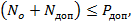 |
(4) |
где No, Nдоп, Pдоп - то же, что и в формуле (3).
4.9. Оценка общей устойчивости участка реконструируемого или аварийного здания должна выполняться сопоставлением фактических нагрузок, приходящихся на усиливаемый фундамент, и усилий в домкратах, используемых одновременно на вдавливании свай. При этом расчет должен выполняться исходя из следующего условия
|
|
(5) |
где m - коэффициент надежности, принимаемый равным 0,5 - 0,7;
где q - то же, что и в формуле (2);
Qn - нормативная масса строительных конструкций, приходящаяся на расчетный участок усиливаемого фундамента, на котором проводится вдавливание свай одновременно несколькими домкратами;
n - количество домкратов;
Nдмк - предельное усилие вдавливания сваи.
Блок-схема классификации упорных элементов
Рис. 5
4.10. Несущая способность основания фундаментов или свай из условия сопротивления грунта реконструируемого здания принимается по фактическим прочностным и деформативным свойствам грунтов, т.е. с учетом техногенного фактора, способного улучшить или ухудшить показатели свойств грунтов в процессе эксплуатации здания или освоения прилегающей к нему территории
|
|
(6) |
где Фo - то же, что в формуле (1);
Фп - первоначальная проектная несущая способность основания или свай из условия сопротивления грунта, принятая для существующего здания по первоначальным изысканиям грунтов площадки до его строительства;
ΔФ - доля увеличения или снижения несущей способности основания за период строительства и эксплуатации здания.
4.11. В случае упрочнения грунтов основания и равенства величин ΔФ и Фдоп отсутствует необходимость усиления фундаментов реконструируемого здания, т.е. выполняются условия:
|
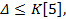 |
(7) |
где Фдоп - то же, что и в формуле (1);
Δ - дополнительная осадка реконструируемого здания после усиления фундамента и приложения дополнительных постоянных и временных нагрузок;
K - коэффициент, зависящий от соотношения дополнительных нагрузок и нагрузок до реконструкции, принимается:
K = 0,1 при Nдоп ≤ 0,3 No;
K = 0,2 при Nдоп ≤ 0,6 No;
K = 0,3 при Nдоп > 0,6 No;
[s] - предельно допустимая величина совместной деформации основания и здания, устанавливаемая согласно СНиП 2.02.01-83.
4.12. Дефицит несущей способности основания и фундамента аварийного здания Фдоп устанавливается после анализа документов, составленных в соответствии с разделом 3. При этом в расчетные нагрузки должны быть включены и те, которые отсутствовали в момент аварии. Тщательно должны быть подсчитаны расчетные нагрузки для недостроенных аварийных зданий.
Для аварийных зданий характерно следующее условие
где Nф - фактическая нагрузка, передаваемая фундаментом аварийного здания в момент аварии;
Фф - фактическая несущая способность основания или свай из условия сопротивления грунта, не обеспечивающая восприятие фактических нагрузок.
Дефицит несущей способности основания и фундамента определяется из соотношения
|
|
(9) |
где Фдоп, Фтр же, что и в формуле (1);
Фф - то же, что и в формуле (8).
4.13. Проектирование и расчет основания комплексного фундамента, включающего существующий фундамент и усиленный многосекционными сваями, выполняется в соответствии с требованиями СНиП 2.02.01-83 и СНиП II-17-77.
Особое внимание уделяется выбору расчетной схемы фундамента. Расчет осадок фундамента выполняется из условия равенства деформаций основания старого фундамента и фундамента из многосекционных свай, если последние не являются стойками. Осадки от дополнительных нагрузок не должны превышать 10 - 30 % от предельных осадок, принимаемых в соответствии со СНиП 2.02.01-83.
4.14. Расчет упорных элементов выполняется в соответствии с требованиями СНиП II-21-75, II-23-81, II-22-81 на проектирование бетонных и железобетонных, стальных, каменных и армокаменных конструкций. При необходимости предусматриваются стальные тяжи для прикрепления упорных элементов к стене. При поперечных двухконсольных упорных балках рассчитываются страховочные инвентарные подкосы либо растяжки.
4.15. Защита элементов усиления (свай, стыков, упорных элементов) от коррозии предусматривается по СНиП II-28-73.
4.16. На стадии технического проекта любым доступным методом определяется несущая способность обычной сваи, размеры которой равны многосекционной свае (по данным статического зондирования грунтов или расчетным путем в соответствии со СНиП II-17-77).
4.17. Многосекционные сваи и фундаменты из них по несущей способности грунтов основания должны рассчитываться по формуле
где N - расчетная нагрузка, передаваемая на сваю;
Ф - несущая способность обычной сваи, определяемая по п. 4.16;
m1 - коэффициент условий работы многосекционной сваи;
для сваи железобетонной с болтовым стыком m1 = 1,0;
для сваи стальной трубчатой или коробчатой, заполняемой раствором (бетоном), m1 - 1,1; для сваи железобетонной со штыревым стыком m1 = 0,95;
Kн - коэффициент надежности, цринимаемый равным 1,1;
Pдoп - расчетная нагрузка, допускаемая на сваю.
4.18. Расчетная нагрузка на упорный элемент должна удовлетворять условию
|
|
(11) |
где y - расчетная нагрузка упорного элемента, определяемая по п. 4.14;
m1 - то же, что и в формуле (10);
m2 - коэффициент условий работы упорного элемента, равный 0,9;
m3 - коэффициент, учитывающий величину усилия вдавливания многосекционной сваи и равный 1,2;
Ф - то же, что и в формуле (10).
4.19. Для устройства фундаментов из многосекционных свай рекомендуется использовать сборные железобетонные секции, соединяемые по мере вдавливания болтами, штырями либо сваркой. Разрешается использование других типов стыков. Стыки составных свай должны быть рассчитаны на нагрузки, возникающие в процессе погружения секций, а также на нагрузки, передаваемые на многосекционные сваи при эксплуатации зданий и сооружений. При отсутствии горизонтальных, выдергивающих и моментных нагрузок можно использовать стальные штыри диаметром 40 - 50 мм, длиной 250 - 300 мм конструктивно, которые устанавливаются вдоль продольной оси секций в специальных гнездах соответствующих размеров.
В исключительных (аварийных) случаях при наличии местных ресурсов используются стальные трубы либо сварные короба, также стыкуемые болтами или сваркой по мере погружения, полость которых подлежит обязательному заполнению песчаным (мелкозернистым) бетоном.
4.20. На стадии рабочих чертежей выполняется контрольный фрагмент фундамента из одной либо двух многосекционных свай при спаренных продольных упорных балках или при поперечной двухконсольной балке.
4.21. Статическое испытание контрольных свай по п. 4.20 выполняется по ГОСТ 5686-78. Затем оформляется в виде отчета, в котором должны содержаться следующие данные:
журнал вдавливания свай и характеристики оборудования;
график зависимости осадки свай от нагрузки;
характеристика элементов свай и их стыков;
характеристика упорного элемента;
журнал наблюдения за поведением маяков, установленных на существующем фундаменте и на стенах;
оценка пригодности в целом испытанного элемента усиления в качестве технического решения усиления всего существующего фундамента;
несущая способность всех узлов элемента усиления (сваи, упорного элемента, стены), рассчитанная в соответствии с требованиями настоящей Инструкции и действующих нормативных документов.
4.22. Прочность тела фундамента, ростверка на возросшие нагрузки либо в случае их повреждения или плохого качества должна быть проверена с учетом требований нормативных документов на проектирование бетонных, железобетонных, каменных и армокаменных конструкций. Дефицит прочности восполняется принятием соответствующих конструктивных мероприятий, взаимоувязанных с проектом подведения многосекционных свай.
5.1. Общие вопросы организации и технологии работ по усилению фундаментов многосекционными сваями решается с учетом требований СНиП 3.02.01-83, СНиП III-2-75 и в соответствии с требованиями настоящей Инструкции (рекомендуемое приложение 5).
5.2. Усиление фундаментов должно начинаться после обеспечения фронта работ по выполнению соответствующих подготовительных мероприятий.
5.3. До начала работ по усилению фундаментов должна быть обеспечена подготовка строительного производства, включающая подготовительные мероприятия и внутриплощадочные подготовительные работы.
5.4. К подготовительным мероприятиям относятся:
решение вопросов об условиях использования существующих транспортных и инженерных коммуникаций для нужд подрядной организации, а также вопросов изготовления упорных и несущих элементов многосекционных свай;
согласование режима работы реконструируемого или аварийного предприятия ка период работ по усилению фундаментов с учетом сохранения по возможности производительности промышленных предприятий;
определение очередности усиления фундаментов по конкретным условиям и возможностям подрядчика;
организация инструментального геодезического и визуального наблюдений по маякам за поведением несущих конструкций реконструируемого либо аварийного здания;
инструктаж исполнителей об особенностях реконструируемого или аварийного здания, о проекте производства работ, контроле качества и технике безопасности.
5.5. Внутриплощадочные подготовительные работы включают:
обеспечение доступа к фундаментам и, при необходимости, закладку шурфов;
устройство необходимых монтажных проемов, электроосвещения (вентиляции, а также подводку коммуникаций согласно проекту производства работ;
монтаж вспомогательных подъемно-транспортных устройств и механизмов;
организацию временных складских площадок и обустройство бытовых помещений;
комплектацию площадки необходимыми механизмами и оборудованием;
завоз свай, упорных элементов и других узлов, деталей и материалов согласно рабочим чертежам.
5.6. Перед началом работ должны быть сняты отсчеты по всем настенным геодезическим маркам и зафиксировано состояние настенных маяков, установленных в местах, не доступных для инструментального наблюдения за развитием деформаций.
5.7. Работы по усилению фундаментов реконструируемых зданий проводятся в последовательности, установленной проектом. При усилении фундаментов аварийных зданий многосекционные сваи в первую очередь подводятся в наименее опасных (деформированных) участках.
5.8. В процессе усиления фундаментов ведется журнал (обязательное приложение 6) и составляются акты на скрытые работы. Особое внимание уделяется обеспечению контролируемых показателей, указанных в табл. 2.
Таблица 2
|
Контролируемые показатели |
Предельные отклонения |
|
Максимальное усилие в домкрате, кН |
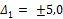 |
|
Скорость осадки марок, мм/сутки |
|
|
для аварийных зданий |
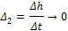 |
|
для реконструируемых зданий |
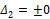 |
|
Раскрытие трещин в маяках для реконструируемых зданий, мм |
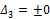 |
|
Критерий стабилизации осадки последней секции сваи за 30 мин., мм |
|
|
Отклонение в размерах расчетных сварочных швов, мм |
|
|
длина |
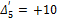 |
|
поперечное сечение |
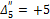 |
|
Местоположение сваи в плане, мм |
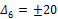 |
|
Отклонение форсекции от вертикали при установке под домкрат, мм |
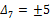 |
5.9. Работы по усилению фундаментов многосекционными сваями выполняются по рабочим чертежам в следующей последовательности:
установка либо изготовление на месте упорного элемента;
монтаж при необходимости страховочных подкосов или растяжек;
установка форсекции сваи;
размещение на верхнем торце форсекции сваи гидродомкрата и подключение его к насосной станции;
погружение форсекции; при поперечных упорных балках вдавливание производится одновременно обеих форсекций, установленных под оба конца поперечной балки;
использование инвентарных толкателей, если ход домкрата меньше длины секции сваи;
стыкование очередной секции и погружение ее в установленном порядке; при необходимости одновременно производится антикоррозионная обработка закладных деталей;
наращивание очередных секций и их вдавливание до тех пор» пока сопротивление многосекционной сваи не достигнет проектной величины;
сбрасывание давления в гидродомкрате до расчетного усилия, равного pдоп, и поддержание этого усилия до условной стабилизации (осадка менее 0,1 мм за 30 мин.);
передача нагрузки от здания, сооружения на сваю по принятому в проекте решению;
антикоррозионное покрытие стальных элементов усиления, обетонирование проемов и узлов усиления, обратная засыпка шурфов, приямков и восстановление полов и отмосток.
Примечание. Настенные маяки и марки сохраняются для осуществления наблюдения за поведением здания в процессе вдавливания свай и в течение года после завершения всех работ по усилению фундамента.
5.10. При расчетном усилии в режиме условной стабилизации производится фиксирование многосекционной сваи, т.е. местное расчетное соединение последней секции сваи с упорным элементом.
5.11. Домкраты снимаются только после передачи нагрузки на многосекционные сваи с помощью упорных элементов.
5.12. Работы по вдавливанию свай и передаче на них нагрузок сопровождаются записью в журнале согласно обязательному приложению 6.
5.13. Статическому испытанию подвергается 0,5 % всех свай, но не менее одной сваи на объект. За критерий условной стабилизации принимается осадка не более 0,1 мм за последний час наблюдений, если под нижним концом сваи залегают грунты песчаные или глинистые с консистенцией от твердой до тугопластичной и не более 0,1 мм за последние два часа наблюдений, если под нижним концом сваи залегают глинистые грунты от мягкопластичной до текучей консистенции.
5.14. Перед началом работ один раз в сутки осматриваются настенные маяки. Не реке чем через 15 дней производится инструментальное наблюдение за поведением здания в зоне работ по усилению фундамента, а при необходимости за всем зданием и прилегающими сооружениями.
5.15. Работы по усилению фундаментов завершаются составлением акта, подписываемого исполнителем, автором проекта и заказчиком.
6.1. Во время работы соблюдаются общие требования СНиП III-4-80, а также соответствующих инструкций по правилам эксплуатации механизмов и машин. Общие вопросы организации стройгенплана и собственно работ по усилению фундамента, в т.ч. внутри существующих помещений, должны решаться при строгом соблюдении требований СНиП III-4-80 по технике безопасности в строительстве.
6.2. Работы по усилению фундаментов многосекционными сваями относятся к категории сложных, требующих строгого соблюдения правил техники безопасности и противопожарных мероприятий и внимания к поведению несущих конструкций самого здания.
6.3. Все работы по усилению фундаментов выполняются в соответствии с проектом производства работ, подготовленным подрядчиком.
6.4. Все исполнители проходят обязательный инструктаж на рабочем месте с тщательным обсуждением особенностей реконструируемого или аварийного здания, проекта производства работ, технологической карты, контроля качества и порядка обеспечения контролируемых показателей (п. 5.8).
6.5. Эксплуатация машин и механизмов, занятых на работах по усилению основания, должна осуществляться при безусловном соблюдении требований техники безопасности, указанных в соответствующих инструкциях. Осмотр и регулирование технологического оборудования производятся при отключенном состоянии.
6.6. Устройство упорных элементов и вдавливание свай следует производить под непосредственным руководством мастера.
6.7. При использовании поперечных двухконсольных балок в качестве упорных и несущих элементов необходимо применять инвентарные распорки или подкосы.
6.8. Работы по вдавливанию свай сопровождается наблюдением за поведением настенных марок и маяков. При незатухающем характере развития деформаций работы по вдавливанию приостанавливаются до выяснения причин.
7.1. Техническая эффективность усиления фундаментов реконструируемых и аварийных зданий должна обеспечиваться строгим соблюдением требований проекта и технологии производства работ с учетом специфики и сложности поставленных задач.
7.2. После завершения работ по усиления оснований и фундаментов реконструируемых зданий снимаются отсчеты с настенных марок и фиксируется положение маяков.
7.3. В процессе реконструкции наземных конструкций зданий по мере роста постоянных и временных нагрузок производится инструментальное геодезическое наблюдение за развитием осадок и кренов. Осадки и крены, по величине близкие к расчетным к принятым в проекте, свидетельствуют о нормальной работе основания фундамента и несущих конструкций здания.
7.4. Техническая эффективность усиления оснований и фундаментов аварийных зданий оценивается по материалам геодезического наблюдения за осадками и кренами. Уменьшение скорости развития осадок и полная их стабилизация достигается после включения в работу элементов усиления.
7.5. Инструментальное геодезическое наблюдение за развитием осадок и кренов производится в течение всего процесса работ по усилению и не менее одного года после завершения всех работ при реконструкции и ликвидации аварии и приложения всех нагрузок.
7.6. Геодезические наблюдения осуществляются в соответствии с требованиями ГОСТ 24846-81 и СНиП III-2-75.
|
АКТ
«___» ______________ 19__ г. _____________________ (место составления акта) Местная комиссия, назначенная __________________________________________ __________________________________________________________________________ (кем назначена, наименование, дата, № документа) в составе председателя ______________________________________________________ (фамилия, имя, отчество, _________________________________________________________________________ занимаемая должность и место работы) и членов комиссии _________________________________________________________ __________________________________________________________________________ (фамилия, имя, отчество, занимаемая должность и место работы) __________________________________________________________________________ __________________________________________________________________________ составила настоящий акт предварительного расследования причин аварки (обрушения), происшедшей на ______________________________________________ (наименование здания, __________________________________________________________________________ сооружения, его местонахождение и принадлежность) Краткое описание аварии (обрушения) с указанием даты и времени суток, когда она произошла, объема разрушенных конструкций, количества пострадавших и других данных, характеризующих аварию (обрушение) ________________________________ _________________________________________________________________________ Состояние здания, сооружения перед аварией (обрушением) - стадия строительства, степень возведения отдельных конструкций и завершения строительно-монтажных работ, срок эксплуатации и другие данные, определяющие состояние здания, сооружения ________________________________________________________________ __________________________________________________________________________ Краткая характеристика обстоятельств, при которых произошла авария (обрушение): состояние погоды, работы, производившиеся при возведении или эксплуатации здания, сооружения и вблизи его непосредственно перед аварией (обрушением), степень загрузки конструкций проектными, монтажными или эксплуатационными нагрузками и т.п. ________________________________________ __________________________________________________________________________ __________________________________________________________________________ Сведения о вынужденной разборке части обрушившихся конструкций здания, сооружения и расположении конструкций до их разборки _______________________ __________________________________________________________________________ Мероприятия, осуществляемые по предотвращению распространения аварии (обрушения) _______________________________________________________________ __________________________________________________________________________ Предполагаемые причины аварии (обрушения) по данным опроса свидетелей или объективным данным _______________________________________________________ __________________________________________________________________________ Когда, кем и каким организациям передано донесение о происшедшей аварии (обрушении) ______________________________________________________________ __________________________________________________________________________ Перечень приложений* _____________ * К акту прилагаются фотоснимки, чертежи, зарисовки или описание положений конструкций здания, сооружения до срочной разборки в целях спасения пострадавших, справка о состоянии погоды, материалы опроса свидетелей аварии (обрушения) и другие материалы по усмотрению местной комиссии. Почтовый адрес и № телефона, принятые для связи с местной комиссией Председатель местной комиссии ________________________________________ (подпись) Члены местной комиссии ________________________________________________ (подписи) __________________________________________________________________________ __________________________________________________________________________ |
АКТ «___» ______________ 19__ г. _____________________ (место составления акта) Техническая комиссия, назначенная ________________________________________ кем назначена, наименование, __________________________________________________ в составе председателя ____ дата, № документа) ___________________________________________________________________________ (фамилия, имя, отчество, занимаемая должность, место работы) ___________________________________________________________________________ и членов комиссии __________________________________________________________ (фамилия, имя, отчество, должность, место работы) ___________________________________________________________________________ ___________________________________________________________________________ с участием приглашенных специалистов _______________________________________ (наименование основных ___________________________________________________________________________ организаций) ___________________________________________________________________________ составила настоящий акт о расследовании причин аварии (обрушения), происшедшей на _____________________________________________________________________ (наименование здания, сооружения, его местонахождение, ___________________________________________________________________________ принадлежность, дата и время суток, когда произошла ___________________________________________________________________________ авария ___________________________________________________________________________ Подробное описание аварии (обрушения) с указанием объема разрушившихся и частично поврежденных конструкций, последовательности обрушения, последствий (полная, частичная приостановка строительства или эксплуатации, количество пострадавших, ориентировочные потери и т.д.) и других данных, характеризующих в целом масштаб аварии (обрушения) ___________________________________________ ___________________________________________________________________________ ___________________________________________________________________________ ___________________________________________________________________________ ___________________________________________________________________________ Основные технические характеристики здания, сооружения, его размеры, примененные несущие и ограждающие конструкции ___________________________________________________________________________ (длина, ширина, количество пролетов, шаг колонн, ___________________________________________________________________________ описание конструкций и т.п.) ___________________________________________________________________________ ___________________________________________________________________________ ___________________________________________________________________________ Наименования: а) проектной организации, разработавшей проект или осуществившей привязку типового или повторно применяемого индивидуального проекта __________________ ___________________________________________________________________________ ___________________________________________________________________________ б) экспертных органов, давших заключение по проекту ________________________ ___________________________________________________________________________ ___________________________________________________________________________ в) предприятий, поставлявших строительные конструкции, изделия и материалы, примененные в разрушенной части здания, сооружения __________________________ ___________________________________________________________________________ ___________________________________________________________________________ ___________________________________________________________________________ г) строительное организации, осуществлявшей строительство ___________________ ___________________________________________________________________________ д) монтажной организации, осуществлявшей монтаж конструкций ___________________________________________________________________________ ___________________________________________________________________________ е) предприятия, организации, учреждения, в эксплуатации которых находится здание, сооружение _________________________________________________________ ___________________________________________________________________________ Даты начала строительства и основных этапов возведения частей здания, сооружения, состояние строительства; дата начала и условия эксплуатации здания, сооружения; наличие акта ввода в действие; основные недоделки и дефекты строительства, отмеченные в акте; своевременность их устранения ________________ ___________________________________________________________________________ ___________________________________________________________________________ Фамилии должностных лиц, непосредственно руководивших строительством или эксплуатацией здания, сооружения, на котором произошла авария (обрушение); наличие у них специального технического образования или права на производство работ (при аварии на жилищно-гражданском строительстве) ______________________ ___________________________________________________________________________ ___________________________________________________________________________ Обстоятельства, при которых произошла авария (обрушение) и условия работы конструкций в момент аварии (обрушения): состояние погоды (температура, ветер, снег и т.п.) _________________________________________________________________ ___________________________________________________________________________ ___________________________________________________________________________ ___________________________________________________________________________ Нагрузки (частичная, полная, наличие не предусмотренных проектом нагрузок, динамическое воздействие эксплуатационных нагрузок и т.п.) ____________________ ___________________________________________________________________________ ___________________________________________________________________________ работы, производившиеся при возведении или эксплуатации здания, сооружения или вблизи его непосредственно перед аварией (в том числе взрывы, забивка свай, рыхление грунта и т.п.) _____________________________________________________ ___________________________________________________________________________ ___________________________________________________________________________ наличие признаков предаварийного состояния здания, сооружения и принятые эксплуатирующей или строящей организацией меры по предупреждению аварии (обрушения) _______________________________________________________________ ___________________________________________________________________________ другие обстоятельства, которые могут способствовать началу или развитию аварии (обрушения) _______________________________________________________________ ___________________________________________________________________________ ___________________________________________________________________________ Оценка качества проектных решений, выполненных строительно-монтажных работ, примененных строительных конструкций, изделий и материалов; отступления от проекта и нарушения требований СНиП, ГОСТ, инструкции по технической эксплуатации зданий и сооружений; соблюдение требований по ведению исполнительной документации и т.п. ___________________________________________________________________________ ___________________________________________________________________________ ___________________________________________________________________________ ___________________________________________________________________________ Оценка деятельности работников технического и авторского надзора ю указанием фамилий и должностей) и организаций, осуществлявших контроль за качеством строительно-монтажных работ и примененных конструкций, изделий и материалов; (по результатам расследования причин аварии) _________________________________ ___________________________________________________________________________ ___________________________________________________________________________ ___________________________________________________________________________ Краткое изложение объяснений должностных лиц, ответственных за проектирование, строительство или эксплуатацию обрушившегося здания, сооружения, его частей или отдельных конструкций ____________________________ ___________________________________________________________________________ ___________________________________________________________________________ Заключение технической комиссии по непосредственной причине аварии (обрушения) и причинах, способствовавших ее распространению. Несоблюдением требований каких нормативных или других документов обусловлено возникновение указанных причин и кто за это ответственен ___________________________________ ___________________________________________________________________________ ___________________________________________________________________________ Рекомендации и мероприятия по ликвидации последствий и предупреждению аварий (условия и принятые меры по ускорению возобновления строительства или эксплуатации сохранившейся части здания, сооружения до полного восстановления разрушившейся части, необходимые меры по усилению конструкций сохранившейся части, мероприятия по восстановлению обрушившейся части здания, сооружения и т.п.) ______________________________________________________________________ ___________________________________________________________________________ ___________________________________________________________________________ Приложения к акту: а) акт предварительного расследования причин аварии (обрушения»); б) фотоснимки, чертежи, зарисовки, схемы; в) результаты лабораторных исследований материалов, элементов конструкций и т.п. г) проверочные расчеты конструкций; д) справка о затратах на восстановление конструкций; е) заключение экспертов; ж) дополнительные инженерно-геологические и гидрогеологические доследования и другие материалы; з) материалы опроса свидетелей и объяснения должностных лиц; и) список приглашенных лиц (с указанием должностей и организаций, в которых работают), участвующих в расследовании причин аварии (обрушения), но не вошедших в состав технической комиссии; к) другие материалы по указанию председателя технической комиссии. Председатель технической комиссии __________________________________________ (подпись, № служебного __________________________________________________________________________ телефона) «___» ______________ 19__ г. Члены технической комиссии: __________________________________________________________________________ (подписи) ____________________ ____________________ Представители привлеченных организаций (основных) ___________________________ __________________________________________________________________________ __________________________________________________________________________ (должность, организации, подпись) |
ХАРАКТЕРИСТИКА И ТЕХНИКО-ЭКОНОМИЧЕСКИЕ ПОКАЗАТЕЛИ СВАЙ
Таблица 1
Характеристика секций свай
|
Марка секции сваи |
Размеры, мы |
Продольная арматура |
Расход материалов на одну секцию |
Справочная масса одной секции, кг |
|||
|
длина |
сечение |
арматура, кг |
бетон марки М300, м3 |
||||
|
С болтовым стыком |
|||||||
|
СМ 0,6.30-б |
600 |
|
4ᴓ16А-II |
16,10 |
0,054 |
151,0 |
|
|
СМ 0,9.30-б |
900 |
300 |
4ᴓ16А- II |
18,30 |
0,081 |
221,0 |
|
|
СМ 1,2.30-б |
1200 |
|
4ᴓ16А-II |
20,50 |
0,108 |
290,0 |
|
|
Со штыревым стыком |
|||||||
|
СМ 0,6.30-ш |
600 |
|
4ᴓ6A-I |
7,41 |
0,054 |
142,0 |
|
|
СМ 0,9.30-ш |
900 |
300 |
4ᴓ6A-I |
8,42 |
0,081 |
211,0 |
|
|
СМ 1,2.30-ш |
1200 |
|
4ᴓ6A-I |
9,43 |
0,108 |
280,0 |
|
Примечание. В обозначениях марок секций свай первые буквы означают их сокращенное наименование (С - свая, М - многосекционная), первое число - длину сваи в м; число после точки - сторону поперечного сечения в см; буква после тире - вид стыка (б - болтовой стык, ш - штыревой).
Например: СМ 0,9.30-б - свая многосекционная, длина - 0,9 м, сечение 30×30 см, болтовой стык.
Таблица 2
Технико-экономические показатели свай
|
Показатели |
Ед. изм. |
Свая с болтовым стыком |
Свая со штыревым стыком |
||||
|
СМ 0,6.30-б |
СМ 0,9.30-б |
СМ 0,9.30-6 |
СМ 1,2.30-б |
СМ 0,6.30-III |
СМ 0,9.30-III |
СМ 1,2.30-III |
|
|
Стоимость изготовления: |
|
|
|
|
|
|
|
|
1 секция |
руб./шт. |
5,36 |
6,92 |
8,18 |
3,63 |
5,04 |
5,98 |
|
1 м3 |
руб./м3 |
99,26 |
85,43 |
75,74 |
67,22 |
62,22 |
55,37 |
|
Стоимость антикоррозионного покрытия (металлизация): |
|
|
|
|
|
|
|
|
1 секция |
руб./шт. |
1,65 |
1,65 |
1,65 |
- |
- |
- |
|
1 м3 |
руб./м3 |
30,54 |
20,36 |
15,26 |
- |
- |
- |
|
Расход бетона М300 |
руб./шт. |
0,054 |
0,081 |
0,108 |
0,054 |
0,081 |
0,108 |
|
Расход стали: |
|
|
|
|
|
|
|
|
1 секция |
кг |
16,11 |
18,29 |
20,46 |
7,41 |
8,42 |
9,43 |
|
1 м3 |
кг |
298 |
225 |
189 |
137,22 |
100,96 |
87,31 |
|
Масса одной секции |
кг |
151,1 |
220,7 |
290,5 |
142,00 |
211,00 |
280,00 |
|
Количество секций в 1 м3 |
шт. |
18,51 |
12,34 |
9,25 |
18,51 |
12,34 |
9,25 |
|
Трудоемкость изготовления: |
чел.-ч |
1,26 |
1,70 |
1,95 |
1,00 |
1,50 |
1,67 |
|
1 секция |
|
|
|
|
|
|
|
|
1 м3 |
чел.-ч |
23,32 |
20,98 |
16,03 |
18,51 |
18,51 |
15,45 |
КОНСТРУКЦИИ СТЫКОВ И СЕКЦИЙ СВАЙ
Принципиальная схема болтового и штыревого стыков свай
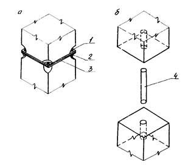
а - болтовой стык; б - штыревой
стык;
1 - болт М16×35,56, ГОСТ
7798-70;
2 - гайка М16, ГОСТ
5915-70 (ГОСТ
15521-70);
3 - торцевая пластина 295×295×8, ГОСТ
380-71;
4 - стальной штырь ᴓ 50 мм, l = 300, ГОСТ 2590-71
Рис. 1
Конструкция секции многосекционной сваи с болтовым стыком
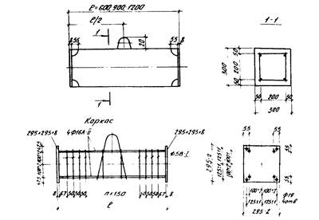
Рис. 2
Конструкция секции многосекционной сваи со штыревым стыком
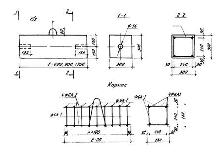
Рис. 3
ТЕХНОЛОГИЧЕСКОЕ ОБОРУДОВАНИЕ И ОСНАСТКА ДЛЯ ВДАВЛИВАНИЯ СВАЙ
Таблица 1
Техническая характеристика домкратов
|
Показатели |
Марка домкрата |
|||
|
ДГС 63-315 |
СМЖ-81 |
ДГ-100-2 |
ДГ-200-2 |
|
|
Наибольшее тяговое усилие, кН |
630 |
630 |
1000 |
2000 |
|
Ход тянущего поршня, мм |
315 |
315 |
155 |
155 |
|
Привод гидродомкрата |
От насосной станции НСП-400 или НСР-400 |
|||
|
Габариты, мм |
|
|
|
|
|
длина |
1090 |
912 |
370 |
440 |
|
ширина |
210 |
245 |
190 |
260 |
|
высота |
260 |
265 |
325 |
370 |
|
Масса, кг |
90 |
75 |
55 |
110 |
|
Изготовитель |
Кемеровский завод «Строммашина» |
|||
Таблица 2
Техническая характеристика насосных станций
|
Показатели |
Марка станции |
|
|
НСР-400 |
НСП-400 |
|
|
Рабочее давление, МПа |
40 |
40 |
|
Привод |
Ручной |
Электрический |
|
Габариты, мм |
|
|
|
длина |
1785 |
913 |
|
ширина |
591 |
590 |
|
высота |
1100 |
|
|
высота по ролику лебедки |
2200 |
|
|
Масса, кг |
121 |
180 |
|
Изготовитель |
Кемеровский завод «Строммашина» |
|
Таблица 3
Техническая характеристика легких переносных кранов
|
Показатели |
Марка легкого переносного крана |
|
|
КЛ-1А |
Пионер-2 |
|
|
Грузовой момент, т∙м |
0,21 |
1,45 |
|
Грузоподъемность, т |
0,10; 0,7; 0,5 |
0,5 |
|
Вылет стрелы, м |
2; 3; 4 |
2,9 |
|
Высота подъема, м |
5,6 - 4,5 |
4,5 |
|
Габариты, мм: |
|
|
|
длина |
6100 |
|
|
ширина |
1800 |
1525 |
|
высота |
6500 |
|
|
Масса крана, кг: |
|
|
|
без противовеса |
760 |
430 |
|
полная |
1635 |
1050 |
|
Изготовитель |
Днепропетровский завод строительных машин |
|
Таблица 4
Техническая характеристика автомобильного крана КС-1562
|
Грузоподъемность, т |
|
|
на выносных опорах |
4,0 - 1,2 |
|
без выносных опор |
1,0 - 0,2 |
|
Вылет стрелы, м |
3,5 - 6,0 |
|
Высота подъема, м |
6,0 - 3,8 |
|
Габариты, мм: |
|
|
длина |
8350 |
|
ширина |
2450 |
|
высота |
3300 |
|
Масса крана, кг |
7570 |
|
Модель базового автомобиля |
ГАЗ-53А |
|
Изготовитель |
|
Таблица 5
Техническая характеристика лебедок
|
Наименование |
Марка ручной лебедки |
Марка электрической лебедки |
|||
|
ТЛ-2 |
ТЛ-1А |
ТЛ-1 |
ТЛ-10 |
ТЛ-9 |
|
|
Тяговое усилие на последнем слое каната, кН |
12,5 |
3,2 |
5,3 |
5,0 |
12,5 |
|
Диаметр каната и тип, мм |
11 (ЛК-Р) |
6,9 (ЛК-Р) |
8,1 (ТК) |
6,9 (ЛК-Р) |
II (ЛК-Р) |
|
Габариты, мм: |
|
|
|
|
|
|
длина |
655 |
810 |
810 |
800 |
975 |
|
ширина |
500 |
830 |
870 |
655 |
1045 |
|
высота |
720 |
570 |
620 |
620 |
775 |
|
Масса, кг |
150 |
240 |
250 |
195 |
470 |
|
Изготовитель |
Орский завод строительных машин |
Саратовский завод строительных машин |
|||
|
ЖУРНАЛ ВДАВЛИВАНИЯ МНОГОСЕКЦИОННЫХ СВАЙ
|
||||||||||||||||||||||||||||||||||||
ОГЛАВЛЕНИЕ